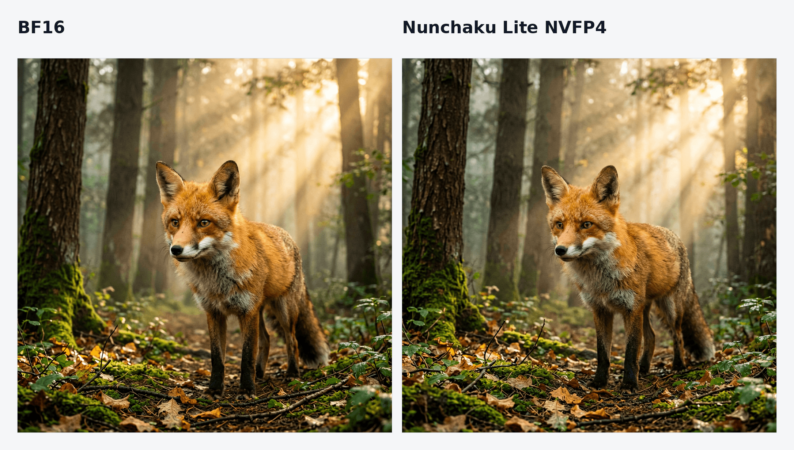
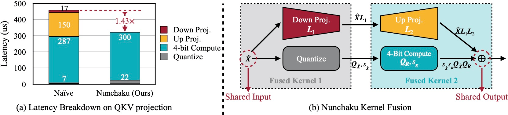
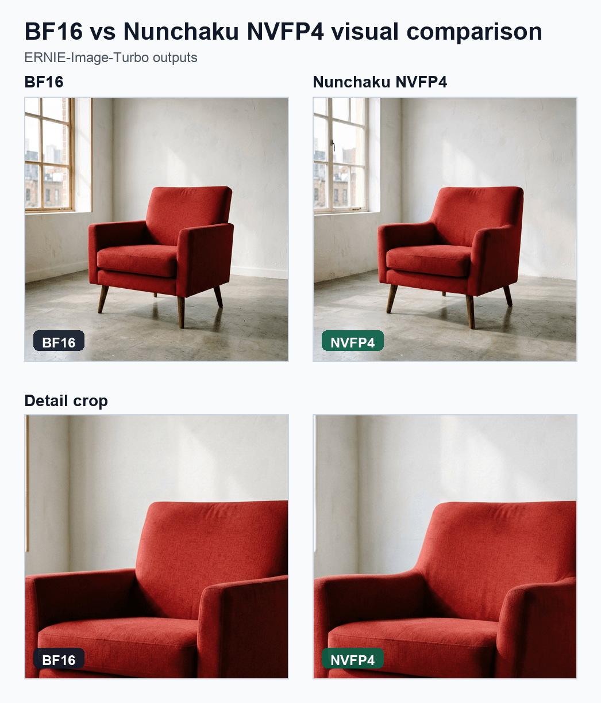

将 Nunchaku 4-bit 扩散推理引入 Diffusers
文章背景与核心概要
运行现代文本到图像和扩散变压器（Diffusion Transformers）模型通常需要消耗大量的显存（BF16 模型需要 20–30 GB），这使得绝大多数消费级 GPU 望而却步。虽然现有的量化后端（如 bitsandbytes、GGUF、torchao 和 Quanto）能够节省内存，但它们大多属于“仅权重（weight-only）”量化，并不能加速推理过程。
本文介绍了 Diffusers 对 Nunchaku Lite 的原生支持。得益于 SVDQuant 4-bit 权重与激活值（W4A4）量化方法，Nunchaku Lite 在显著降低内存占用的同时，还能带来大约 30% 的速度提升（结合 torch.compile 时提速甚至可达 1.8倍），并且完全不需要本地 CUDA 编译或自定义的 pipeline 类。
目录
- Nunchaku Lite 入门指南
- 背景：SVDQuant 与 Nunchaku
- Nunchaku Lite 简介
- 在 Diffusers 中进行原生加载
- 硬件支持
- 获得更高的速度与更低的内存占用
- 基准测试
- 端到端延迟与内存
- 图像质量
- 量化你自己的模型
- 1. 检查将被量化的内容
- 2. 运行量化
- 3. 打包 Diffusers Pipeline
- 4. 加载、验证并推送到 Hub
- 带有结构重写的模型量化
- 开箱即用的检查点
- 结论
- 致谢
Nunchaku Lite 入门指南
首先，安装相关依赖。你需要较新版本的 Diffusers 以及 Hugging Face kernels 软件包：
pip install -U diffusers transformers accelerate kernels bitsandbytes
然后像加载其他 Diffusers 模型一样加载预量化 pipeline：
import torch
from diffusers import ErnieImagePipeline
pipe = ErnieImagePipeline.from_pretrained(
"lite-infer/ERNIE-Image-Turbo-nunchaku-lite-nvfp4_r32-bnb4-text-encoder",
torch_dtype=torch.bfloat16,
).to("cuda")
image = pipe(
prompt="A cinematic portrait of a red fox in a misty forest at sunrise, "
"detailed fur, volumetric light",
height=1024,
width=1024,
num_inference_steps=8,
guidance_scale=1.0,
generator=torch.Generator("cuda").manual_seed(42),
).images[0]
image.save("output.png")

这里不需要自定义 pipeline 类或独立的推理引擎，也没有什么需要在本地编译的内容。首次使用时，NVFP4 内核会通过 Nunchaku Lite kernels 页面 从 Hub 自动下载。
这个特定的检查点将 Nunchaku NVFP4 transformer 与 bitsandbytes NF4 文本编码器配对，在 RTX 5090 上生成 1024×1024 图像仅需约 1.7 秒，峰值内存占用约为 12 GB（相比之下 BF16 pipeline 约为 ~24 GB）。
注意： NVFP4 检查点需要 NVIDIA Blackwell GPU（RTX 50 系列、RTX PRO 6000、B200）。对于早期世代的 GPU，请使用 INT4 变体。
背景：SVDQuant 与 Nunchaku
SVDQuant 是支撑 Nunchaku 的量化技术。标准的 4-bit 量化在处理扩散变压器时往往会遇到困难，因为权重和激活值中都包含大量的异常值（outliers）。SVDQuant 通过以下方式解决了这一问题： 1. 将激活值异常值转移到权重中。 2. 将每个权重矩阵中最困难的部分隔离到一个小的 16-bit 低秩（low-rank）分支中。 3. 将剩余的残差量化为 4-bit。
Nunchaku 通过针对 4-bit 路径和低秩分支的自定义融合内核（fused kernels），使这一过程变得极其高效。

Nunchaku Lite 简介
原版的 Nunchaku 引擎通过特定模型的融合执行路径实现了极致性能。Nunchaku Lite 将这一能力直接引入到了 Diffusers 中，而无需依赖自定义引擎。
它使用两个内核系列，在运行时动态地将原生 Diffusers 模型中相关的 nn.Linear 模块替换为 SVDQ/AWQ 线性层：
* svdq_w4a4：4-bit 权重和激活值，带有 SVDQuant 低秩校正（提供 INT4 和 NVFP4 变体）。用于繁重的注意力机制和 MLP 投影。
* awq_w4a16：4-bit 权重配 16-bit 激活值。用于对精度敏感自适应归一化和调制层（例如 FLUX 的 adanorm_single / adanorm_zero）。
在 Diffusers 中进行原生加载
Nunchaku Lite 模型库的功能与标准 Diffusers 库完全一致。transformer 的 config.json 包含了一个简单的 quantization_config 块：
"quantization_config": {
"quant_method": "nunchaku_lite",
"compute_dtype": "bfloat16",
"svdq_w4a4": {
"precision": "nvfp4",
"group_size": 16,
"rank": 32,
"targets": [
"layers.0.self_attention.to_q",
"layers.0.self_attention.to_k",
"..."
]
},
"awq_w4a16": {
"precision": "int4",
"group_size": 64,
"targets": [
"adaLN_modulation.1",
"..."
]
}
}
由于模块结构与未量化模型完全相同，调度器（schedulers）、LoRA 加载钩子（hooks）、CPU 卸载（offloading）和 torch.compile 等下游功能都可以无缝工作。
硬件支持
| 方案 | 精度 | 支持的 GPU |
|---|---|---|
svdq_w4a4 |
nvfp4 |
Blackwell (RTX 50 系列, RTX PRO 6000, B200) |
svdq_w4a4 |
int4 |
Turing / Ampere / Ada (RTX 30 & 40 系列, A100, L40S) |
awq_w4a16 |
int4 |
Turing / Ampere / Ada (RTX 30 & 40 系列, A100, L40S) |
警告： 这些 4-bit 内核目前不支持 Volta 和 Hopper GPU。量化器会在加载时检查 CUDA 能力，并直接抛出错误，而不是输出错误的结果。
获得更高的速度与更低的内存占用
torch.compile：编译 transformer 可以将端到端加速比从 ~1.35x 提升至 1.8x：pipe.transformer.compile(fullgraph=True) # 或者，编译重复的块以加快编译速度： pipe.transformer.compile_repeated_blocks(fullgraph=True)- 量化文本编码器：大型文本编码器（如 T5 或 Qwen3）会消耗数 GB 的显存。使用 bitsandbytes NF4 对它们进行量化可以进一步降低峰值显存占用。
- CPU 卸载：内置的 Diffusers 辅助函数（如
enable_model_cpu_offload()）在显存受限的环境中仍能正常工作。
基准测试
基准测试在 NVIDIA RTX PRO 6000 (Blackwell) 上以 1024×1024 分辨率运行，使用的是 rootonchair/ERNIE-Image-Turbo-nunchaku-lite-int4-bnb4-text-encoder。
端到端延迟与内存
| 配置 | 完整 Pipeline | 去噪循环 | 峰值显存 | 加速比 |
|---|---|---|---|---|
| BF16 基线 | 3.00 s | 2.86 s | 31.1 GB | 1.0x |
| Nunchaku Lite NVFP4 | 2.27 s | 2.13 s | 20.6 GB | 1.35x |
Nunchaku Lite NVFP4 + torch.compile |
1.68 s | 1.53 s | 20.6 GB | 1.8x |
| Nunchaku Lite NVFP4 + NF4 文本编码器 | 2.29 s | 2.13 s | 16.0 GB | 1.35x |
图像质量

在相同随机种子和设置下，BF16 与 4-bit 输出的对比。
量化你自己的模型
diffuse-compressor 工具包为 Diffusers 模型提供了端到端的 SVDQuant 工作流。
1. 检查将被量化的内容
python examples/text_to_image/quantize_hf.py black-forest-labs/FLUX.2-klein-4B \
--precision int4 --rank 32 --inspect-config
2. 运行量化
python examples/text_to_image/quantize_hf.py black-forest-labs/FLUX.2-klein-4B \
--precision int4 \
--output outputs/checkpoints/svdq-int4_r32-flux-2-klein-4b.safetensors
3. 打包 Diffusers Pipeline
python examples/convert_nunchaku_lite_diffusers.py \
--checkpoint outputs/checkpoints/svdq-int4_r32-flux-2-klein-4b.safetensors \
--model-id black-forest-labs/FLUX.2-klein-4B \
--bnb4-text-encoder text_encoder \
--compute-dtype bfloat16 \
--output-dir outputs/diffusers/FLUX.2-klein-4B-nunchaku-lite-int4-bnb4-text-encoder
4. 加载、验证并推送到 Hub
import torch
from diffusers import DiffusionPipeline
pipe = DiffusionPipeline.from_pretrained(
"outputs/diffusers/FLUX.2-klein-4B-nunchaku-lite-int4-bnb4-text-encoder",
device_map="cuda",
)
image = pipe(
"A glass robot in a greenhouse, cinematic lighting",
num_inference_steps=4, guidance_scale=1.0,
generator=torch.Generator("cuda").manual_seed(12345),
).images[0]
开箱即用的检查点
rootonchair/ERNIE-Image-Turbo-nunchaku-lite-int4-bnb4-text-encoderrootonchair/ERNIE-Image-Turbo-nunchaku-lite-nvfp4-bnb4-text-encoderOzzyGT/Krea_2_Turbo_nunchaku_lite_nvfp4lite-infer集合。
结论
Nunchaku 的 SVDQuant 内核为在消费级硬件上运行扩散模型提供了一种高效的方法，并且它们现在已经在 Diffusers 内部获得了原生支持。如果你量化并发布了新模型，欢迎在 Hub 上分享它！
有用链接
- Diffusers Nunchaku 文档
- 集成 PR (
huggingface/diffusers#14100) - SVDQuant 论文 & Nunchaku 引擎
- diffuse-compressor 工具包
致谢
感谢 Diffusers 维护者的指导、MIT HAN Lab / Nunchaku 团队带来的 SVDQuant、Marc Sun 和 Álvaro Somoza 的反馈，以及 SilverAI 对开发环境的支持。